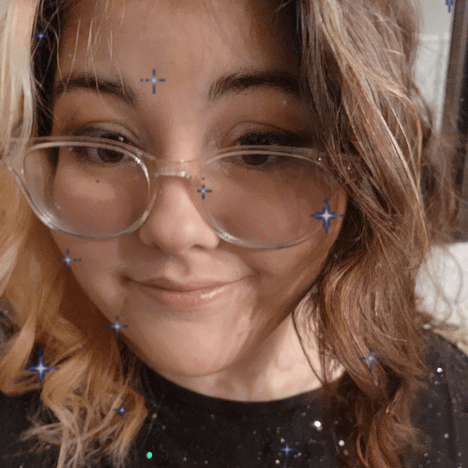

About Me

Summer Burbo
Frontend Developer
Florida, USA
Hello, I'm Summer! I'm a front-end developer based in Florida who enjoys turning ideas into clean, responsive, easy-to-use websites. I got my start through an intensive front-end development program paired with an apprenticeship at Above Promotions, which I completed in February 2025. There I worked through the full process on real projects: project briefs, user personas, brand boards, Figma mockups, and responsive builds in HTML, CSS, and Bootstrap. Today I work as a Student Services Coordinator at Computer Coach Training Center, where I help students navigate their tech training. That work has sharpened how I think about users: clear communication, simple processes, and tools that make things easier for the people using them. I'm also pursuing a Bachelor of Applied Science with a focus in Data Analytics and building my JavaScript skills through hands-on projects. My goal is to combine the two, creating interfaces that make data clear and useful.
If you don’t like the road you’re walking, start paving another one.